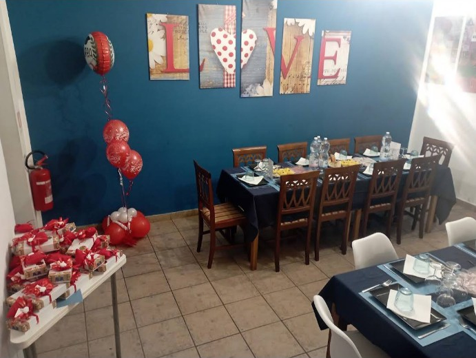

Il Locale
Benvenuti a Controcorrente
Nel cuore di Borgo San Paolo, a Torino, Controcorrente è un piccolo ristorante dall’atmosfera informale e familiare. Pareti blu, tavoli in legno e richiami al mare fanno da cornice a una cucina di mare e non solo, con proposte che cambiano e il piacere di stare a tavola senza fretta.
Qui ci si accomoda, si mangia e si scambiano due parole. Anche qualcuna in più, se Paolo prende il via.



Dicono di noi
Leggi le recensioni su Google o racconta la tua esperienza.
Leggi le recensioni su GoogleLascia una recensioneSolo se positiva, ovviamente… 😂
Scherziamo: scrivi quello che pensi davvero!